What road markings do
Road markings are the lines, arrows, and words painted on the road surface. They divide the road, guide your path, and regulate stopping and crossing. They often repeat or complete what an upright sign says. When markings and a sign disagree, follow the stricter instruction. A traffic officer overrides both, and temporary (yellow) work-zone markings override the normal white ones. Reflective road studs can supplement a continuous line but never replace a painted line: a broken line in particular is never made of studs or reflectors. This is a US bridge to unlearn: at home the raised reflective markers in the gaps of a dashed line are part of the line, and in some states they replace paint entirely. In Italy the chiodi (studs) may only be added alongside a painted continuous line, never in place of one.
The US bridge: re-learn the center line. At home, a yellow center line means opposing traffic and white separates same-direction lanes. In Italy, virtually every permanent marking is white, including the center line between opposing directions. Yellow never means "oncoming": it marks something special (bus stops, taxi stands, no-parking curbs, disability bays, temporary work-zone lines).
Watch the traps. The color questions recycle the same falsehoods: arrows that turn "blue on autostrade," center lines that "may be blue," a TAXI inscription "in white." Arrows and center lines are always white; reserved-area inscriptions are yellow.
Color tells you the type
- White is the color of almost everything: lane lines, arrows, crossings, stop lines, hatched islands, inscriptions like STOP or a place name.
- Yellow marks something special: a no-parking curb (yellow-and-black), a bus-stop zigzag, BUS and TAXI inscriptions, a disability parking space, reserved lanes, and temporary work-zone lines.
- Blue is the parking color. What each parking-space color means is set out with the figures, under Special zones and obstacle markings.
Longitudinal lines (along the road)
These run in your direction of travel and set whether you may cross them.
Two verbs to keep apart. Superare is a general verb, "to get past": with a line as its object it means cross (superare la striscia), with a limit it means exceed, and with a vehicle it can mean overtake. Sorpassare (and the noun sorpasso) means only overtaking a vehicle. In this topic the object is almost always the line, so read superare as cross: la striscia non può essere superata means the line may not be crossed, and consente il sorpasso senza superarla means overtaking is allowed as long as you do not cross the line. Riding along on top of a line is circolare a cavallo (astride) of it, which is always forbidden.
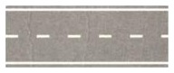
- A broken (dashed) line (striscia discontinua) may be crossed when it is safe, to change lanes, overtake, turn left, or (on a two-way road, with care) make a U-turn.
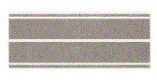
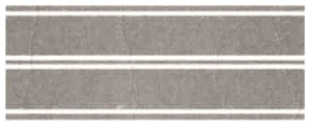
- A continuous line (striscia continua) may not be crossed, not even with one wheel, nor straddled, and overtaking is allowed only if you can do it without crossing it. On a two-way road it divides the two directions (two lanes, one carriageway, not two carriageways) and it forbids a U-turn; it is found before crosswalks and on the way up to a crest. It forbids a left turn across it too, so where a left turn is allowed, at a junction or a driveway, the center line is broken or interrupted.
- A double continuous line separates the directions on a two-way road and may not be crossed either way: no overtaking across it, no U-turn, and no left turn across it either. Overtaking is allowed only if it fits entirely on your side of the line.
- Straddling is always banned: you may not ride along on top of the line, even a broken one.
- Center lines are white only, never blue, never yellow (yellow lines are temporary work-zone markings).
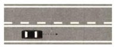
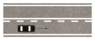
Where each one lives. The continuous line guards the blind spots: it appears before junctions and crosswalks, before railroad crossings, on the uphill stretch of a crest (dosso), before curves. The broken line returns where sight is clear again: after the curve, after the railroad crossing, on the downhill stretch. The questions test this with mirrored figures, and with the mixed double line (one continuous stroke beside one broken one): the stroke immediately to your left decides. When the continuous stroke is on your side, which is before a curve, a junction, a railroad crossing, or on the way up to a crest, you may not overtake, make a U-turn, or turn left across it. When the broken stroke is on your side, which is after those spots, where sight returns, you may cross it in safety to overtake, turn, or turn around. The mixed double line is found only on two-way roads, because its purpose is to give the two directions different permissions. A one-way road has no oncoming traffic, so it has no use for this marking. A single broken line, by contrast, is also used on one-way roads, where it divides lanes going the same way.
Same line, different road. On a two-way road the center line separates the two directions (to turn left, move toward the center; U-turn only across a broken line). On a one-way road it merely separates lanes of the same direction: you may cross it freely to overtake, even in a curve, even at a crest, and the left lane is normally for overtaking, which is also the lane you move into to turn left; but a U-turn is banned on a one-way road no matter what the line looks like. On a two-way road that same broken line licenses nothing of the sort: overtaking stays banned in a curve and at a crest, in town as much as outside it.
And when there are no markings at all? Many Italian country roads have no painted center line. The rules do not vanish with the paint. It is still a single two-way carriageway, so keep to the right half and drive near the right edge. The keep-right rule applies even when the road is empty, so the middle of the road is never yours. Where sight is short (curves, crests), behave as if the invisible center line were continuous, which means no overtaking. And at junctions without signs, the default yield-to-the-right rule governs. In short, an unmarked road is read exactly like a marked one. You just have to supply the lines yourself.
Edge and side lines
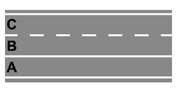
- The continuous edge line (striscia di margine) marks the boundary of the carriageway; beyond it lies the shoulder. On an autostrada the continuous line also sets off the emergency lane, where driving and overtaking are forbidden. It is for breakdown stops only, up to three hours, and it is barred to every vehicle, motorcycles included, emergency vehicles apart. It is never a parking area. You may stop there only for a real emergency, such as a breakdown, and the three hours are the longest such a stop may last, not a time allowed for parking. The continuous edge line itself is crossed only in an emergency.
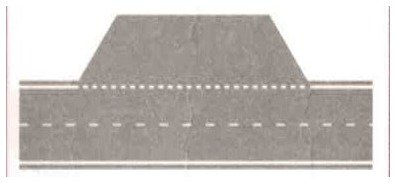
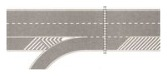
- A broken side line marks a boundary you are allowed to cross whenever you need to, emergency or not: it sets off a pull-off area, a driveway, an acceleration or deceleration lane, or the edge of the main road where a secondary road joins.
Transverse lines (across your lane)
A transverse line is painted across your lane, and its job is to say where a rule applies, never what the rule is. The rule comes from the sign, the light or the officer the line completes: a continuous line is a stop line (linea di arresto) for a STOP sign, a red light or an officer's order; a broken line, or a row of white triangles, is a yield line for a YIELD sign. A transverse line never stands alone and carries no rule of its own, so it says nothing about who has priority: after a STOP sign you do yield to both sides, but it is the sign that says so, and at a light the light decides. It exists only where the junction is regulated; an uncontrolled intersection has no stop line at all.
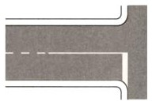
- The figure shows the continuous stop line on its own: a white bar across the lane at the junction, marking the exact point where the front of the vehicle halts. It is not a crosswalk, not a bike crossing, not the start of a parking ban, it does not mark the exit of a private property, and it is never paired with a YIELD sign. Once you have the right to proceed, you cross it.
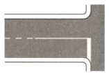
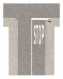
- In practice you meet it at a traffic light, where you stop at the line on red, and at a STOP sign, where it may be completed by the word STOP painted on the road.
- The yield line, a broken transverse line or a row of white triangles ("shark teeth"), marks where you yield for a YIELD sign, stopping only if traffic requires it.
- The line tells you where; the sign, light, or officer tells you when. A stop line exists only at a regulated point. An uncontrolled intersection has no stop line, and a YIELD junction gets the broken line, which you may cross without stopping when the way is clear.
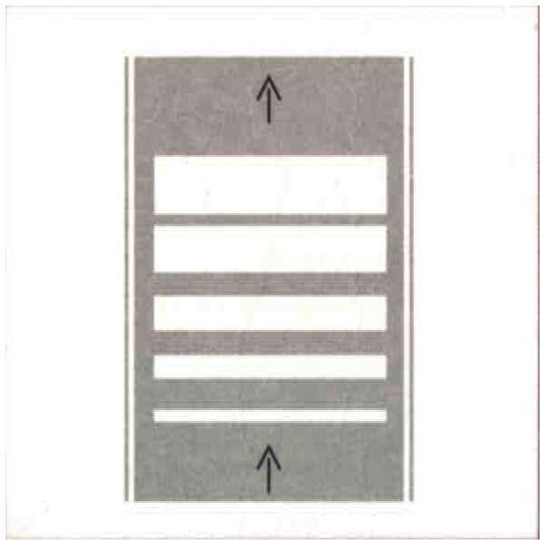
- Speed-reduction bars (strisce trasversali di rallentamento) are white bars painted across the lane, progressively wider and closer together, and they order you to slow down, typically ahead of a hazard, a crossing, or a toll area.
Crossings
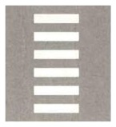
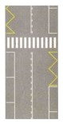
- A crosswalk (attraversamento pedonale) is the broad white parallel bars, the "zebra." Drivers must stop and yield to pedestrians on it or about to step onto it; vehicles may drive over it when it is clear. It is used in and outside of town; on secondary extra-urban roads it must be preceded by the warning sign. It can be preceded on the right by a yellow zigzag line, and completed by the vertical PEDESTRIAN CROSSING sign. The zigzag has a purpose: parking is forbidden on it, so no standing car hides the crossing, and the pattern itself catches the eye of a driver approaching, exactly as at a bus stop.
- A bike crossing is two broken lines of white squares, for bicycles: slow down and yield to cyclists already on the carriageway; on extra-urban roads it is preceded by the bike-crossing warning triangle.
Arrows and lane selection
Directional arrows painted inside the lanes before a junction show the directions permitted from each lane, single (straight, left, right) or combined (straight-right, straight-left). Two rules govern every arrow figure. The first rule is about timing. While the lane lines are still broken you may move into the lane you want, and once they turn continuous the arrow in your lane binds you. The second rule is about reading. Each lane is bound to its own arrow, so the question is always about the lane it names, not the lane the car is drawn in. Arrows are white on every road, never blue on autostrade, never yellow on no-parking streets, and they may be completed by a place name painted on the road; they have nothing to do with an emergency-stop lane.
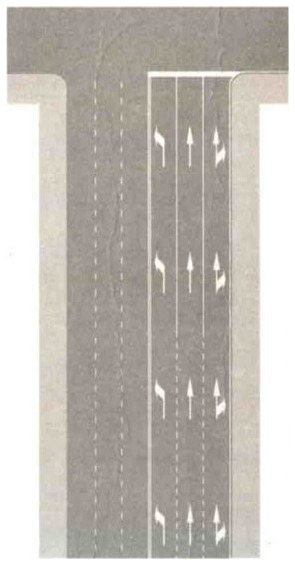
- The figure shows the two stretches: nearer the camera the lane lines are broken, and a driver may still change lane; at the junction they are continuous, and the arrow in each lane, here straight-right in the right lane, is binding.
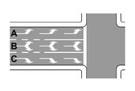
- Read each lane by its own arrow. Here no lane goes straight: lane A allows only a left turn, and lane B allows a turn, not straight ahead. The three lanes are all in one direction, not two-way, and they do not let you go "in every direction". You may still change lanes while the lane lines are broken.
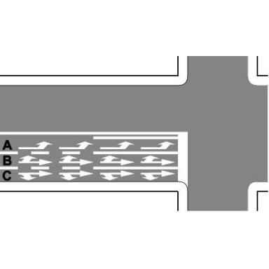
- Combined arrows widen a lane's options. Here lane A allows only a left turn; lane B allows straight or left, so A is not the only lane that turns left; lane C allows straight or right, and it is the only lane that turns right, though not a right-turn-only lane. Not all three lanes go straight. Again, change lanes while the lines are still broken.
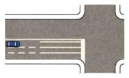
- Here all three lanes go straight: the left lane allows straight or left, the middle lane allows straight only, and the right lane allows straight or right. The car in the left lane may turn left staying in its lane; the right lane is not reserved for slow vehicles. Lane changes are allowed while the lines are broken and forbidden across the continuous stretch.
Guide lines and painted islands: a tested contrast
The same junction is drawn both ways, and what each vehicle may do changes with it. Learn the difference by sight before the figures: a hatched island (oblique white stripes inside continuous lines) is an obligation, it closes an area and forces the movements around it; curved broken lines are guidance, they help you trace the turn and forbid nothing. With the island the word is "must", and with guide lines the word is "may".

- A traffic island (isola di traffico) is the hatched area of oblique white stripes bounded by continuous lines, and driving, stopping and parking on it are always forbidden. It can only be passed on the side it allows, and it is never made of blue stripes. In this figure the island forces the movements: B and C must turn right, A must go straight, and nobody may turn left, not even yielding to the others.
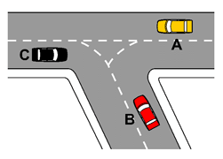
- Guide lines (strisce di guida) are curved broken white lines that lead you through a junction. They guide, they do not forbid. The same junction drawn with guide lines instead of an island: C may go straight, B may turn left, yielding to A, and A may go anywhere; no vehicle is forced to turn.
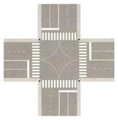
- In a left turn keep the guide lines on your left and the center of the junction on your right, so you do not cut into the opposing road. Vehicles going straight may cross them. Turning right they stay immediately on your left as well. They are not the edge of a traffic island.
Words and symbols painted on the road
Five regulation inscriptions appear in this topic. STOP completes the STOP sign, never the YIELD sign. A place name completes a directional arrow. BUS in yellow marks a scheduled-bus stop zone. TAXI in yellow marks a taxi stand, and it is never white. P L with a St. Andrew's cross is painted before a railroad crossing of any kind, with barriers, half-barriers or none, and it draws attention to the crossing ahead and forbids moving to the left half of the road. An inscription either completes a sign or marks a reserved zone, so an announcement of a service ahead, advertising, encouragement for cyclists, or words like GIOCHI are not regulation markings. A large white number like "50" is the recommended speed, not a limit, and certainly not a weight limit.
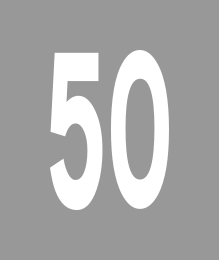
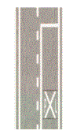
- The "50" painted in large white figures is the recommended speed for that stretch, not a limit and not a weight. The cross-hatch before a railroad crossing is the P L marking with the St. Andrew's cross: keep to the right half of the road and watch for trains, whatever kind of crossing follows.
Special zones and obstacle markings
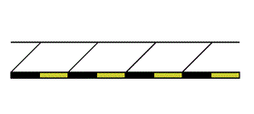
- What the figure shows. A stretch of road seen from above: the dotted line at the top is the far edge, the diagonal strokes are the roadway, and the bar at the bottom is the curb of the sidewalk, painted in alternating yellow and black. The stripes go on the vertical face of the curb, the part a driver sees when pulling in, not on the walking surface.
- What it is for. It marks a stretch where parking is prohibited along that side (divieto di sosta), for everyone, taxis and buses included; the paint does the job of a NO PARKING sign along the whole length of the curb, so you can see where the ban runs without looking for a post. A brief stop (fermata) to let someone in or out is still allowed. (Sosta is parking and fermata is stopping, and the two must be kept apart.) Paint is used rather than a sign because a narrow old-town street has no room for posts and no straight sight line, so a curb painted meter by meter shows exactly where the ban runs. The US parallel is the painted curb: a red curb in California means no stopping or parking and needs no sign; Italy uses the same idea with its own color code.
- What it is not. It is a marking for drivers, not a warning to pedestrians about the step; it marks the edge of the road, not an obstacle in the middle; it does not reserve the space for buses; and it does not forbid stopping.
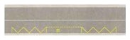
- The yellow zigzag marks a scheduled-bus (and trolleybus, and articulated-bus) stop zone: the zigzag helps buses pull in and out, parking is banned on it, stopping is not, and other vehicles may still drive across the area.
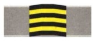
- A speed bump (dosso artificiale) is an obstacle marked in yellow-and-black stripes, the "markings on obstacles" of this topic's title. The same yellow-black banding marks other fixed obstacles.
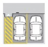
- A disability parking space is outlined in yellow with the wheelchair symbol; the diagonal-striped access zone beside it must stay clear so the person can get in and out.
- The color of a parking space says who may use it. Blue outlines mean paid parking, white spaces are free, and yellow stalls are reserved.
Summary of key points
- Markings divide, guide, and regulate. A traffic officer and temporary yellow work-zone lines override the normal markings; studs may supplement but never replace them.
- Italy's center line is white even between opposing directions. The US yellow-means-oncoming rule does not transfer. Yellow marks something special (bus, taxi, disability, no-parking curb, temporary lines), and blue marks paid parking.
- Broken lines may be crossed; continuous and double continuous may not, not even with one wheel; straddling any line is banned. A continuous line appears before curves and junctions and on the way up to a crest, and a broken line returns after them.
- On a one-way road the center line only separates lanes (the left lane is for overtaking, crossing is free, and a U-turn is still banned). On a two-way road it separates the directions.
- The stop line marks the stop point for STOP, red light, or officer. It says where, not when, and exists only where the junction is regulated; the broken or triangle yield line marks the yield point; progressive transverse bars order you to slow down. Broken side lines set off pull-offs, driveways, and acceleration lanes; the continuous edge line sets off the shoulder and the autostrada emergency lane (for breakdowns only, and for at most three hours).
- Arrows are always white and bind once the lane lines turn continuous. Guide lines lead and may be crossed; a hatched traffic island forbids driving, stopping, and parking.
- Obstacles such as no-parking curbs and speed bumps wear yellow-and-black stripes. A yellow zigzag marks a bus stop, where parking is banned and stopping is allowed. A "50" painted on the road is a recommended speed.